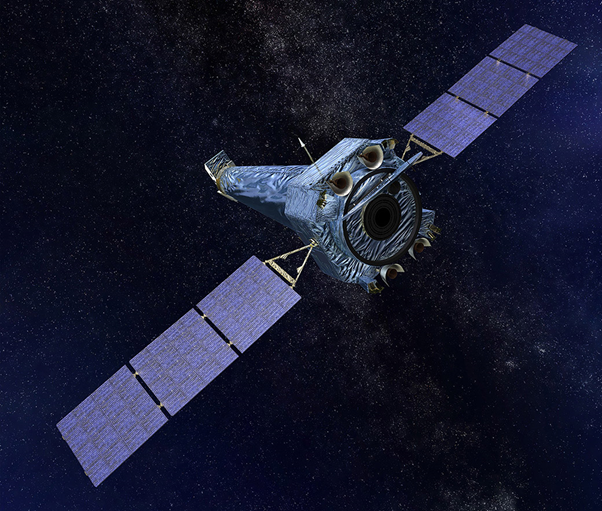

Наблюдая за белым карликом в созвездии Кассиопея, астрономы зафиксировали исходящее от него рентгеновское излучение, яркость которого регулярно то возрастала, то падала. Это необычное поведение объекта, по мнению ученых, указывает на наличие в его системе компаньона, вероятно, планеты с массой Юпитера, которая разрушается под действием тепла, излучения и гравитационных сил выгоревшей звезды. Результаты исследования представлены в журнале The Astrophysical Journal. «Мы не знали, что у этого белого карлика есть компаньон, пока не увидели данные рентгеновских наблюдений. Однако поиск спутника с помощью оптических телескопов ничего нам не дал. Это означает, что им является либо очень тусклая звезда, либо коричневый карлик, либо планета», – рассказывает Ю-Хуа Чу, ведущий автор исследования из Института астрономии и астрофизики Академии Синика (Тайвань).

Белый карлик, получивший обозначение KPD 0005+5106, примерно на 36% «легче» и в 17 раз меньше Солнца. Он удален от Земли на 1300 световых лет и является одним из самых горячих из известных: температура его поверхности достигает 200 тысяч градусов по Цельсию. Для сравнения, температура поверхности Солнца составляет 5,5 тысячи градусов по Цельсию. Наблюдения звезды проводились с помощью рентгеновских космических обсерваторий NASA «Chandra» и ESA «XMM-Newton». Они показали, что интенсивность поступающего от него излучения регулярно изменяется каждые 4,7 часа. Этот повторяющийся «прилив» и «отлив» рентгеновских лучей явно указывает на присутствие на орбите вокруг KPD 0005+5106 объекта, чье вещество он вытягивает на окружающий его диск. Затем материал падает на полюса звезды.
Компаньон находится примерно в 850 тысячах километрах от белого карлика, что почти в 70 раз меньше среднего расстояния от Меркурия до Солнца. Согласно моделированию, планета с массой примерно такой же, как у Юпитера – наиболее вероятный кандидат, согласующийся с данными наблюдений. «Вещество, падающее на полюса звезды, создает два ярких пятна высокоэнергетического рентгеновского излучения. По мере того, как компоненты вращаются вокруг друг друга, «горячая точка», обращенная больше к Земле, периодически пропадает из поля зрения, заставляя рентгеновские лучи регулярно увеличиваться и уменьшаться, что и зафиксировали телескопы», – заключил Хесус Тоала, соавтор исследования из Национального автономного университета Мексики.